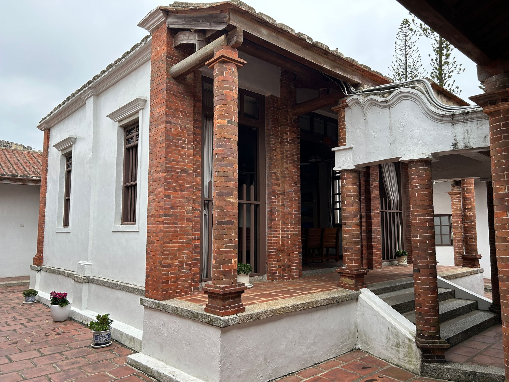

可以，但要先處理好「繼承登記」和「持分」。繼承來的房子要拿去貸款，三個關鍵：①已完成繼承登記（過戶到繼承人名下）②若多人共有，需處理持分或取得共有人同意③遺產稅已繳清或有完稅證明。三者到位，繼承的不動產就能比照一般房產評估貸款或售後回租。本公司非金融機構，最終核貸由金融機構決定。
「父親走了以後，那間房子過戶到我名下。手頭正緊，想拿去貸款，銀行行員卻只說『這個比較複雜』，沒說清楚到底卡在哪。」
這是我們很常聽到的狀況。房子本身沒問題，卡關的往往是登記、共有人、房屋現況這幾件事——而多數人第一次遇到，完全不知道從何下手。
本文把繼承房屋貸款的 3 個關鍵條件說清楚，以及每種情況下你有哪些選擇。
先說結論：繼承的房子可以貸款，但有前提。最關鍵的 3 件事是：繼承登記是否完成、共有人是否全數同意、房屋有無查封或舊貸款。這 3 關都過，才能正常申辦。
想快速對照自己卡在哪一關、兩條路怎麼選？可以先看 繼承房產資金方案專頁 →
銀行核貸的基本邏輯是：房屋所有人才能以房屋做擔保。如果房屋地政謄本上的所有人還是被繼承人（已故），你就算是繼承人，銀行也不會受理。
繼承登記怎麼辦？
時間估算：繼承登記通常需要 2–4 週，若涉及多位繼承人且需協調，時間可能更長。遺產稅申報有 6 個月期限，建議及早啟動。
很多家庭繼承房屋時，不只一位子女繼承，房屋變成「公同共有」或「分別共有」。這時要貸款，難度就上來了。
若繼承人尚未辦理遺產分割，房屋處於「公同共有」狀態。此時要以這棟房屋申請貸款，所有繼承人必須全部同意，且共同具名或出具書面同意。只要有一位繼承人不同意，貸款申請就無法進行。
若已完成遺產分割，每位繼承人有各自的持分比例（如各 1/2 或 1/3），則：
常見卡關點：繼承人之間意見不合（有人想賣、有人不想動）是最常見的貸款障礙。建議在繼承協議階段就把貸款需求放入討論，避免日後各說各話。
在申請貸款前，建議先向地政事務所調閱最新謄本，確認以下 3 件事：
確認 3 關都過後，依你的財務狀況和需求，以下是可以申辦的方案：
| 方案 | 適合情況 | 信用要求 | 速度 |
|---|---|---|---|
| 一胎房貸 | 繼承後無其他貸款，全新申辦 | 一般（信用乾淨） | 4–6 週 |
| 增貸／二胎 | 原本已有貸款，想再借出部分淨值 | 中等 | 4–8 週 |
| 貸款整合 | 多筆負債，整合成一筆低利率房貸 | 輕度瑕疵可 | 4–6 週 |
| 售後回租 | 信用有瑕疵、急需大額資金、或銀行拒貸 | 以不動產價值評估為主 | 2–4 週 |
若繼承的房子原本無貸款，且你的信用和收入條件正常，這是最直接的路。銀行依據房屋市值核貸 6–7 成，申請流程和一般購屋貸款相同。
若房屋已有舊貸款（已故父母留下的房貸），繼承人可以選擇承接原有貸款，或另外申請新貸款清償舊款後重新設定條件。
如果你繼承了房子，同時自己也有信貸、卡債等高利率負債，可以考慮以繼承的房屋為擔保，申請貸款整合，把所有高息負債一次清掉，DSR 改善，每月現金流也恢復正常。
繼承人自身信用有瑕疵（如聯徵差、DSR 超標），銀行一般路線通常走不通。但如果繼承的房屋有足夠市值，售後回租是可行方向——不依賴繼承人的信用評分，主要審查房屋本身的條件。
不行。銀行要求申請人必須是地政謄本上的所有權人。需先完成繼承登記，取得新的所有權狀後，才能申辦貸款。
理論上持分可以單獨設定抵押，但實務上銀行幾乎不接受，因為持分房屋難以執行拍賣。更可行的方式是協商共識，或透過法院辦理「分割遺產」取得獨立產權後再申辦。
不一定需要先清償。你可以選擇：(1) 承接舊貸款繼續繳款；(2) 申請新貸款，以新款清償舊款，同時重新談條件（轉貸）。如果房屋有足夠淨值，轉貸同時還可能取得額外資金。
查封中的房屋無法辦理任何貸款或產權移轉。需先了解查封原因（通常是被繼承人生前的債務），協商清償後由法院或債權人解除查封，再行辦理繼承登記與貸款。建議先委任律師確認查封的性質與範圍。
屋齡影響貸款年限，但不代表無法貸款。多數銀行的計算公式是「貸款年限 = 65 − 屋齡」。40 年屋齡的房子，貸款年限約 20–25 年，月付會比新屋高一些，但仍可申辦。若屋況太差，銀行可能要求附帶修繕計畫或壓低核貸成數。
實際結果依個案不動產條件、財務狀況與市場情況而定，本公司非金融機構，最終核貸由金融機構決定。